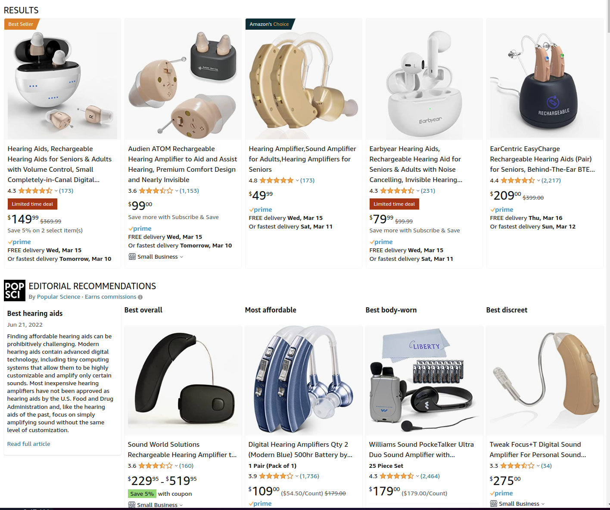

What does a hearing aid do?
Signal Processing in Hearing Aids
Hearing aid types
Hearing aid fitting
When don’t hearing aids work?
Addressing lingering questions from the course so far
It can be uniform throughout the frequency domain, or targeted
A microphone picks up on the signal
It’s converted to digital form and processed
It’s played back into the ear canal in louder (potentially modified) form
Sometimes with some intermediate processing
… and everything happens before the tympanic membrane
Cosmetic advantages
In ear vs. Behind Ear vs. In-Canal
This is also a realm for middle-ear implants!
Degree of amplification
Vulnerability to ear canal change
Do you want any sound to pass through at all?
… but your book goes into details!
And you’ll figure this out as you go about…
Hearing aid fitting is a whole subdiscipline
There are thousands of variants and types
Every company has their own secret sauces and marketing hype
We’re going to talk about the basic concepts
Check the hearing
Figure out the pain points for the patient
Select the best choice given the constraints
Instruct the patient on their use
Tune them as needed
If the hearing aid isn’t helping where they need help, it’s not doing any good!
Good fitting may require multiple tuning sessions
Adjusting frequency responses
Adjusting filtering settings
Adjusting amplification strength
The best hearing aid in the world doesn’t do anything on the nightstand!
Partly due to stigma
Partly due to poor prior experiences, or family experiences
Partly due to the complexity involved
Often due to cost

‘Turn the screw for more volume in all frequencies’
‘Use different tips for different ears’
‘We made an Airpod with a microphone which plays things louder’
Meant to be cheap, not comfortable
Real Hearing Aids can now be sold Over-The-Counter in the US
Watch for big companies to enter the space with ‘smart hearing aids’
Ask how smart they are!
Characterizing the level and nature of the hearing loss
Tuning the devices to patient needs
Overamplification
One-size-fits-all form factors
Ongoing support and maintenance
Loss of screening for other disorders
Amplification can be a great help for many
Loss of hearing can be very difficult for folks who’ve always had it!
… but hearing aids aren’t always enough!
With loss of OHCs, the sound may be perceptible, but it won’t be as clean!
“Notched” loss, where some frequencies are missing, won’t be fixed here
Dynamic range losses mean that distortion is inevitable
Take care of your ears! Technology cannot save you!
Then you’ll want to use bone conduction
Bone conduction Hearing aids
Bone anchored implants
Or maybe a middle-ear implant!
If the person can’t turn sound into nerve impulses, amplification isn’t the problem!
This can also happen if the loss is so profound that sufficient amplification isn’t possible
In these cases, patients might consider a surgical option
Hearing aids amplify signals moving into the middle ear
They have many different kinds of on-board processing
They can also incorporate other sources of sound
Different form factors make for different experiences
Fitting is complicated
Hearing aids don’t always work!
The surgical option!